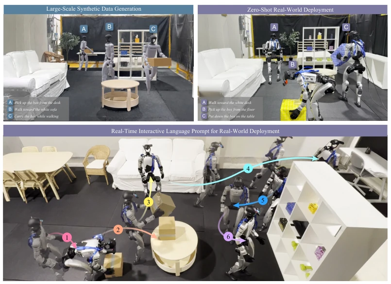
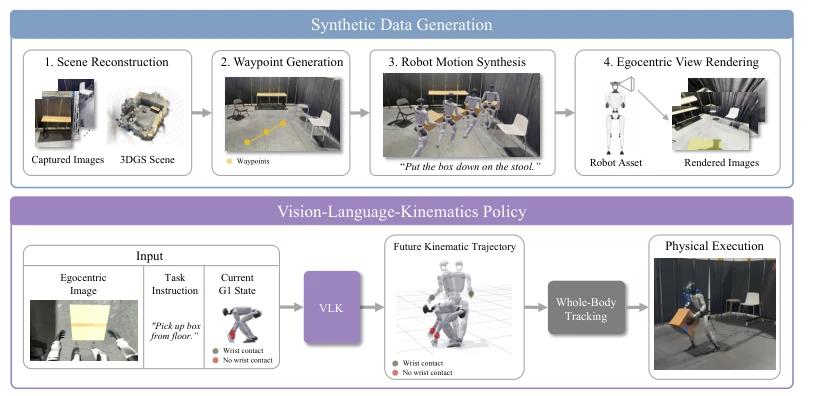
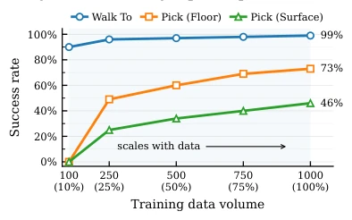
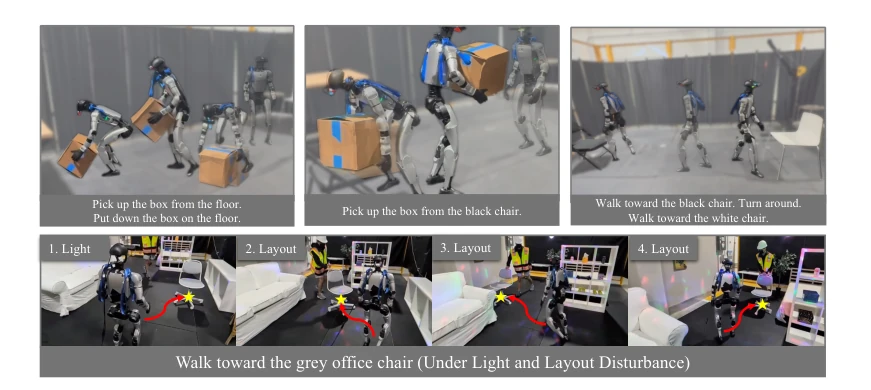
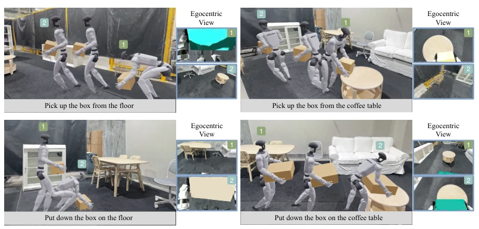
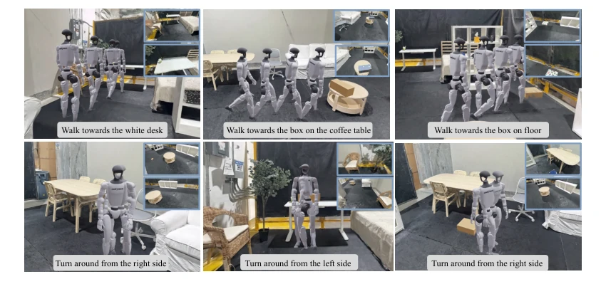
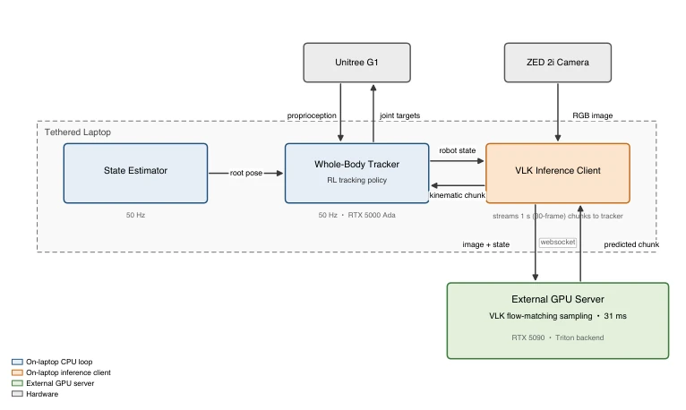

This paper attempts to address the data hunger problem of humanoid robot loco-manipulation using "synthetic data", with a clear approach: reconstruct real scenes using 3DGS, then "act out" robot actions in the virtual world. The highlight lies in successfully achieving zero-shot transfer from synthetic data to the Unitree G1 real robot, generating 48k trajectories without human teleoperation, saving significant costs. However, to be brutally honest, this is essentially imitation learning with "re-skinning", relying on human motion retargeting such as OMOMO; it works for large boxes but fails for small cups. The so-called "intelligence" is actually mostly shouldered by the Whole-body tracker, while VLK mainly predicts motion trajectories rather than low-level force control. For researchers pursuing general dexterous manipulation, this appears more like an efficient engineering solution than an algorithmic breakthrough. It demonstrates the potential of synthetic data in sim-to-real, but also exposes the ceiling of current data-driven methods in complex interactions.
To complete the "see, speak, move" closed loop, the core difficulty for humanoid robots lies in the lack of large-scale synchronized "vision-language-kinematics" triplet data. Existing solutions each have significant drawbacks: real robot teleoperation [1, 2] is costly and difficult to scale, human motion capture data [23, 24] lacks the robot's first-person perspective, and egocentric video datasets [6, 7] lack robot kinematics labels. Without this complete tuple, strategy learning cannot be embarked upon. Although VLA models [8, 11] are popular, they mostly rely on real demonstrations. This paper aims to break this bottleneck by using 3DGS to reconstruct scenes and synthetic behaviors, decoupling vision and motion generation, achieving low-cost, scalable sim-to-real data production, enabling robots to learn navigation and manipulation in real reconstructed scenes, filling the gap in scenario-specific synthetic data.

Figure 1: Synthetic interactions in reconstructed scenes enable real-world perception-based loco- manipulation. Synthetic data generation produces paired egocentric observations, task instructions, and G1 kinematic trajectories for VLK training. Top: A–C show atomic prompt-conditioned skills generated in re- constructed scenes (left) and executed on the physical G1 in the real world (right). Bottom: long-horizon real-world behavior is produced by chaining atomic prompts; markers 1–6 indicate successive stages for pick- ing, placing, and navigation. Project Website: https://vision-language-kinematics.github.io.
The overall process is divided into two major parts: data generation and strategy execution. First, Polycam is used to scan the real environment, reconstructing metric-scale scenes via 3DGS and labeling semantic boxes and feasible regions. Next, based on BONES-SEED and OMOMO data, G1 navigation and interaction trajectories are synthesized via conditional diffusion models, utilizing scene prior information (such as object poses) to assist generation, finally rendering egocentric RGB images. The data generation phase achieves decoupling of vision and kinematics. In the strategy part, the VLK strategy inputs the current viewpoint, instruction, and state, predicting the whole-body kinematics trajectory and wrist contact labels for the future 1 second. During deployment, the Contact-aware Whole-body Tracker (SceneBot) converts predicted trajectories into low-level joint commands, responsible for physical execution and contact stability. This "predict trajectory + track execution" architecture reduces the difficulty of strategy learning, decouples perception and low-level control, enabling VLK to focus only on high-level motion planning without needing to handle complex dynamic constraints, significantly improving training efficiency and deployment stability.

Figure 2: Method overview. Top: we reconstruct 3D scenes, generate task waypoints, synthe- size G1 motions, and render egocentric observations to produce paired vision-language-kinematics supervision. Bottom: the paired data train a VLK policy to predict short-horizon G1 kinematic tra- jectories from egocentric observations, task instructions, and the current G1 state; at deployment, a whole-body tracker converts the predicted trajectories into robot actions for physical execution.
实验Experiments
在 Unitree G1 真机与 MuJoCo 仿真中评估了导航与物体搬运任务。数据集包含 48,000 条合成轨迹。主要指标为任务成功率。结果显示，导航和地面拾取在真机表现优异（Lab 场景 Walk To 100%），但表面放置任务成功率较低（约 50%），受限于重定向数据的覆盖范围。消融实验表明，合成数据量增加显著提升操作任务性能，而视觉域随机化（光照/相机）对 sim-to-real 迁移至关重要，移除后成功率从 90% 跌至 41%。这证明了合成视觉扰动对缩小 sim-real 差距的关键作用，同时也揭示了当前方法在精细操作上的局限性，需更多样化的交互数据支持。
Navigation and object manipulation tasks were evaluated on the Unitree G1 real robot and MuJoCo simulation. The dataset contains 48,000 synthetic trajectories. The main metric is task success rate. Results show that navigation and ground pickup perform excellently on the real robot (Lab scene Walk To 100%), but the surface placement task success rate is lower (approximately 50%), limited by the coverage of retargeted data. Ablation studies indicate that increasing the volume of synthetic data significantly improves manipulation task performance, while visual domain randomization (lighting/camera) is crucial for sim-to-real transfer; after removal, the success rate drops from 90% to 41%. This demonstrates the key role of synthetic visual perturbations in narrowing the sim-real gap, while also revealing the limitations of current methods in fine manipulation, requiring more diverse interaction data support.

Figure 4: Ablation of training-data volume in the lab scene. We vary the number of synthe- sized trajectories per mode per layout and report success rates on the lab-scene validation set.

Figure 5: Real-world deployment in lab and apartment scenes. The VLK system executes language-conditioned navigation and box manipulation under different layouts and visual variations. Top: sequential lab-scene executions for manipulation and navigation. Bottom: apartment-scene de- ployments under lighting (disco light) and layout variations.
其他图片Other Figures

Figure 3: Examples of generated VLK supervision. Each sequence pairs an egocentric RGB observation and language instruction with the corresponding G1 whole-body kinematic trajectory.

Figure 6: Examples from the synthetic vision-language-kinematics dataset. Each example pairs an egocentric RGB observation and language instruction with a G1 kinematic trajectory.

Figure 7: Deployment system overview. Three concurrent on-robot processes (blue: state estima- tion and whole-body tracking; orange: VLK inference client) communicate through shared mem- ory and inter-process queues. The client offloads flow-matching sampling to a remote VLK server (green) over a websocket. The whole-body tracker runs at 50 Hz and emits joint-level PD targets, while the inference loop replans at ∼1.8 Hz; predicted kinematic chunks are spliced into the active reference with a 10-frame overlap.